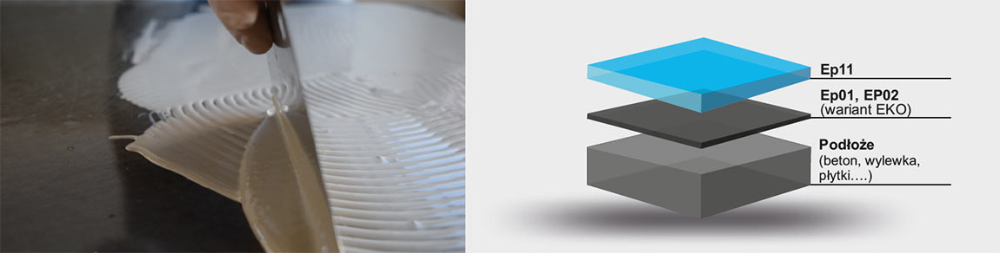
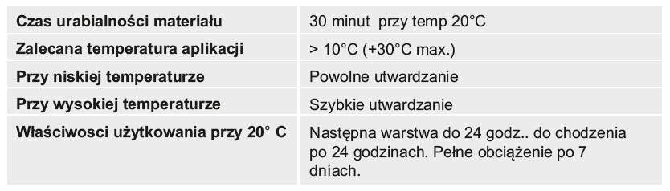
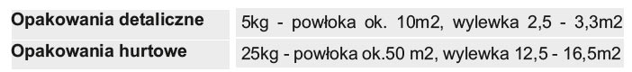

Dwukomponentowa epoksydowa posadzka i szerokim spektrum zastosowania
Finalna barwiona warstwa wierzchnia o idealnej przyczepności do położy zagruntowanych produktami TopStone.
- wszystkie typy pomieszczeń przemysłowych, sklepy, hurtownie , biura, pomieszczenia wystawowe, szpitale, laboratoria, parkingi
- powierzchnia antypoślizgowa do garaży, autoserwisów, hal produkcyjnych,
- strukturowana powłoka (po zmieszaniu z TopThix) do pomieszczeń o niższym mechanicznym obciążeniu ruchem
- po odpowiedniej aplikacji dwóch barwionych produktów EP 11 istnieje możliwość uzyskania efektu marmuru.
- możliwość uzyskania ciekawych efektów designowych na podłogach, schodach.
- proste zastosowanie
- wysokie parametry wytrzymałościowe
- wysoka odporność chemiczna
- dostępna kolorystyka RAL
- łatwość w utrzymaniu czystości
- powierzchnia z połyskiem
- antypoślizgowość
- możliwość zasypu piaskiem kwarcowym
- dekoracyjna
- produkt epoksydowy, dwuskładnikowy, bezrozpuszczalnikowy, bez nonylfenolu, pigmentowany, przyjazny dla środowiska naturalnego

W czasie aplikacji i utwardzania EP11 jakikolwiek kontakt z woda i substancjami chemicznymi jest zabroniony. Do ogrzewania pomieszczeń w czasie aplikacji Ep11 zakaz używania otwartego ognia, palników gazowych itp. W miejscu realizacji istnieje możliwość wytrącania się Co2 i pary wodnej które mogą mieć negatywne oddziaływanie na jakość uzyskanej powierzchni. Posadzki epoxydowe nie posiadają całkowitej UV stabilności.
Podane zużycia materiałów mogą się różnić w zależności od konkretnych warunków i konkretnego zastosowania.

W temp > +12°C < +25°C , w suchym pomieszczeniach , w oryginalnych opakowaniach. Okres gwarancji - na opakowaniu.
1. Na zagruntowaną i utwardzoną powierzchnię (Ep01, Ep02 lub wariant EKO) aplikować zgodnie z poniższą technologią EP11 (ok. po 12-24 godz.
od aplikacji gruntu (Ep01, EP02 lub wariant EKO).
2. Potrzebne narzędzia: pojemnik do wymieszania dwóch składników Ep11 wg instrukcji na etykiecie, mieszadło, gumowa paca, paca metalowa zębata.wałek z kolcami, wałek nylonowy lub welurowy.
3. Dokładnie w g proporcji na etykiecie wymieszać oba składniki A i B EP11 za pomocą mieszarki wolnoobrotowe. Czas mieszania ok. 3 min. Zalecane przelanie do kolejnego pojemnika i ponowne wymieszanie.
4. Tak przygotowany materiał zużyć do 30 min (przy temp 20°C) wybraną technologią np.:powłoka wykonana wałkiem, powłoka wykonana metalową pacą z zębami lub bez
5. TopStone EP11 stosować przy rosnącej temp - celem uniknięcia ryzyka kondensacji pary wodnej z powietrza na powierzchni.
Nigdy nie ściągać/zbierać pacą materiału ze ścianek naczynia - aplikacja tego materiału (który może być nie wymieszany) może spowodować nieutwardzone miejsca, plamy na powierzchni.
Przed aplikacją TopStone EP11 sprawdzić czy powierzchnia jest dokładnie zagruntowana bez bąbli powietrza, nacieków i innych nierówności czy wad podłoża.
W przypadku konieczności powierzchnię wyrównać TopStone Fillerem lub przeprowadzić kolejne gruntowanie.
TopStone EP11 zaraz po wymieszaniu aplikujemy. Jeśli tego nie dopełnimy, przy następnym mieszaniu np. 5-10 min. może nastąpić gwałtowna reakcja egzotermiczna (bardzo szybkie utwardzenie z wydzieleniem ciepła). Narzędzia oraz skórę w przypaku zabrudzenia nieutwardzoną masą czyścimy TopStone Cleanerem lub acetonem.